Teaching Workbench v2.2 · PR #117 · 25 October 2026
Assignments and Class Progress
The C2 return flow, C5 exact-version assignment creation, V04 discovery density and V05 spacing corrections have completed focused synthetic integration checks. The galleries below show the measured result and the remaining visual differences.
Focused functional verification passed Full visual parity not claimed
Exact source and capture identities
- Before assignment
-
9f300ce6e975ab460328a8aa4428c26d441ee0ab— PR #117 before these corrections. - Final assignment
42896da0b45733e79d6d44e246031996bfa49671.- Final combination
-
9ca101893a07910539a9e9efe12bc955bf4a08ba, treefff9c0716e85702e5d205c15766a4cfb6d7f9423. Final build and check identities are recorded in the verification receipt. - Shared inputs
-
C:
357a6716a333137e909fb77b9907a90a833a6df3; E:53e494a639d82bd8daa9dfb7655a23ebca3aa9c4. The combination consumes shared session return, shell and published-lesson handoff contracts. - Discovery captures
-
ba74dc1b09a571726f9a904c2626dde955378aa2, tree0ceb3aceb71275f9486fe6d4876723febbc52cca. Its discovery CSS is unchanged in the final combination. Those images precede activation of the baseline assignment. - Progress and details
-
Capture build
b8d0eb55e793905e78452980cc4e92ac178644ab, tree466b42f5b70a33400115d9df5f876f65f3d9289f, after explicit activation of the baseline assignment. Its 63 historical synthetic responses remain present. Later changes affect Escape handling and scroll scope, with no CSS change; these images are not a new execution on9ca1018. - Historical comparison
-
PR #122 combination
462cfb1b31d9108cec70d18b6553bd45048d2eed, tree03cca1fed3900a122e689c4a512afadd9052e5af. Historical artifact revisiona82b90864b9d87153ba88128eb2282ac60f6dbeb.
Executed check results and environment identity: verification.json. The authoritative browser manifest records all 21 final-package JPG identities, viewport and intrinsic image dimensions, SHA256 hashes, per-capture builds and observed checks. Historical image identities are in historical-captures.json. Existing screenshots are never relabeled as new final captures.
Executed checks and outcomes
| Check | Result | What it establishes |
|---|---|---|
| Final assignment checks |
Passed 506 unit tests; lint; typecheck; formatting; production build; full remote CI integration. |
Source 42896da passed remote
CI run 40204254870. A formatting issue in the historical capture manifest was
corrected, then formatting and build passed. This was a
report-artifact issue.
|
| Final combined checks |
Passed 625 unit tests; production build; complete assignment HTTP harness; authenticated publication HTTP checks. |
Source 9ca1018 repeated all listed checks
successfully with disabled providers and synthetic data. The
earlier unavailable-approved-version shared-layout ZodError
was corrected by C and the full assignment harness
subsequently passed.
|
| C2 displayed return on capture build | Passed | Read in full → displayed return preserves the selected student/concept, synthetic origin, Details pane and focus. Earlier focused 320px checks also confirmed Close → cell, Back → Details, Forward → cell and Details reload. |
| C2 hashless Questions history on capture build | b8d0eb5 retest passed |
Questions → session → native Back restores
progress-main. The earlier BODY-focus gap is
fixed. The manifest records scrollY 0 before navigation and
265 after Back; this is focus restoration, not a claim of
identical scroll offset.
|
| Filtering and history | Passed | Class/status filtering, no-match state and reload retained the URL state. Native Back restored the all-state assignment; Forward restored the active/no-match state. |
| C5 exact version and draft recovery | Passed | Published version 1 remained selected while version 2 existed. Class, title and instructions survived reload and Back/Forward before creation. |
| Creation and separate activation | Passed |
Creation produced inactive assignment
0023d5d6-f33a-46f4-a265-43feb43b29ab, pinned to
version 1. Explicit review and a separate activation succeeded
without changing that version. The new assignment has zero
participation: 0 of 24 students.
|
| Four viewport captures |
Captured 1440×1000, 1024×768, 390×844, 320×844. |
Discovery, progress and details are shown below. No horizontal page overflow was reported; discovery gutters measured 28 / 28 / 14 / 12px. These outcomes do not establish full visual parity. |
| Broader C browser run and Escape follow-up | Exact-candidate retest passed |
Earlier runs passed 30 of 31 app cases and 26 restoration
checks. The 1024px Escape conflict is preserved in
the historical case ledger. Fixes in assignment 42896da and shared C
357a671 are in combined 9ca1018. The
exact candidate passed 8 of 8 actual-app cases and 6 of 6
component checks at 1440/1024/390 in production and
StrictMode. The former 1024px switcher Escape conflict now
preserves URL/pane and restores the opener. Page Details
Escape passes at 320px and 1024px; the displayed C2 return
also passes.
|
Earlier 505-test standalone and 622-test combined results remain historical; they are superseded for this final source by the results above. All data used here are fictional or synthetic. No paid model, live student, real agentic or screen-reader acceptance is claimed.
Implemented contracts
C2: progress → session → progress
Outgoing session links carry returnTo=progress,
assignment, origin, progress view, pane, class/status filters and
optional attempt identity. Original progress selection uses
progressStudent and progressConcept. The
target session identifies whose work is opened; target
student/concept query fields are omitted.
This allows a teacher to inspect a Questions or Study sessions row for
another student and return to the original selection.
The shared receiver authorizes the session/attempt and independently
validates the return roster and concept against the authorized
assignment and exact published version. It maps the namespaced
selection back to student/concept in the
progress URL. Return context grants no access.
| Return context | Page-owned focus target |
|---|---|
| Details | cell-evidence |
| Grid with a selected student and/or concept |
ap-selection-<student or all>-<concept or
all>
|
| Concepts with a selected concept |
ap-selection-all-<concept>, the visible
concept column.
|
| Questions, Study sessions, or no visible selection | progress-main |
The region declares data-workspace-restoration="page".
Restoration accepts only fixed/context-derived targets and also
handles hashless history. The final fix avoids automatically scrolling
the main view during initial focus restoration.
C5: exact published version → inactive assignment
/teacher/assignments/new?lesson=<exact lesson>&version=<full published version>[&class=<authorized class>]The receiver rejects orphan versions, unknown exact pairs and foreign classes, then uses the existing authorized content resolver. Exact handoffs cannot fall back to another publication. Legacy lesson-only and unscoped picker behavior remain compatible. Creation, publication and activation remain separate decisions; pending creation requests retain their immutable idempotency payload.
V04/V05: discovery and shared spacing
Discovery groups by real lesson identity, exact version and classroom assignment. Assigned publications appear before unassigned publications and drafts. Long IDs show an eight-character prefix and six-character suffix, with the full immutable ID available through a native disclosure; routes and requests keep the full value. Closed desktop filters share the heading row; opening them restores the full-width form. Active filters initially open, and teachers can collapse them.
Normal discovery/review content consumes the shell inset once: 28px desktop, 14px through 800px, 12px through 360px. Resolved progress uses the agreed full-width frame and one internal heading/content gutter, with its own details pane. Shared shell and evidence/session services remain owned by their respective agents.
Measured discovery change
Coordinates below use the first lesson heading in CSS pixels. The after captures isolate the baseline class using a class filter that was manually collapsed. The historical default fixture and prototype use different content and counts; this is a layout comparison, not identical data.
| Viewport | Before x / y | Prototype x / y | After x / y | After y difference |
|---|---|---|---|---|
| 1440 × 1000 | 56 / 360.42 | 28 / 255.28 | 28 / 252.50 | −2.78px |
| 1024 × 768 | 56 / 360.42 | 28 / 255.28 | 28 / 252.50 | −2.78px |
| 390 × 844 | 30 / 492.69 | 14 / 265.94 | 14 / 315.02 | +49.08px |
| 320 × 844 | 28 / 559.66 | 12 / 287.69 | 12 / 325.53 | +37.84px |
Desktop first-lesson density is close to the reference. Mobile remains taller because the visible class-filter summary and real copy wrap into additional lines. The corrected version disclosure avoids the previous full-hash stack; it does not remove the filter or fabricate a short version number.
Before sources:
PR #122 application geometry
and
prototype geometry. After source: browser manifest.
Prototype HTML SHA256:
c853369da1250adf24a741a38c3d94d3c97a976c012c352732cf4dd8d924cb54.
Discovery: prototype, before and after
Click an image to inspect it at full resolution. Before/prototype PNGs are preserved historical proof. After JPGs record ba74dc1 with the same discovery CSS as the current 9ca1018 candidate. The baseline assignment is inactive in these discovery images.
1440 × 1000

Historical exported v2.2 prototype; fictional built-in data.

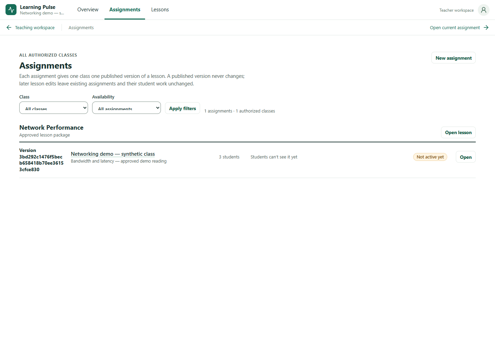
Historical combination 462cfb1; assignment input 9f300ce.

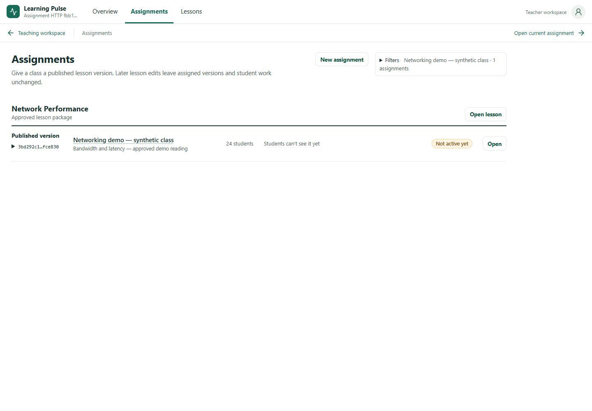
Captured ba74dc1; discovery CSS unchanged in current 9ca1018. Baseline class filter manually collapsed; assignment still inactive.
1024 × 768

Historical exported v2.2 prototype; fictional built-in data.

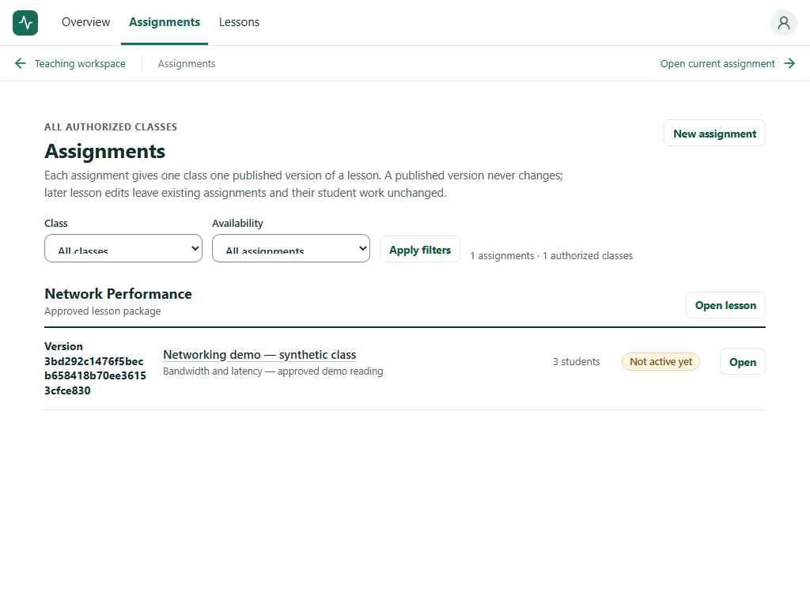
Historical combination 462cfb1; assignment input 9f300ce.

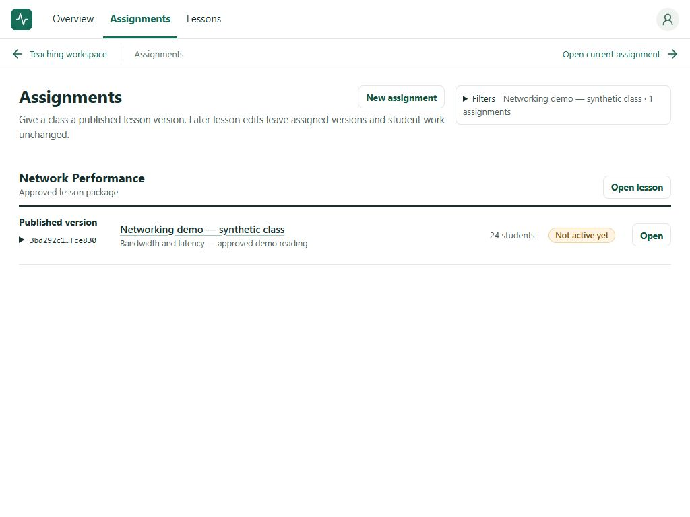
Captured ba74dc1; discovery CSS unchanged in current 9ca1018. Baseline class filter manually collapsed; assignment still inactive.
390 × 844

Historical exported v2.2 prototype; fictional built-in data.

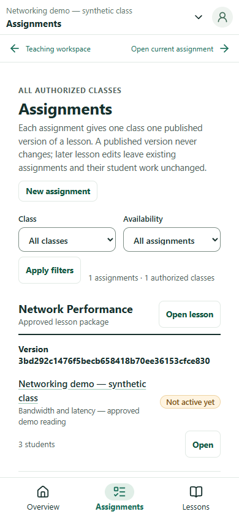
Historical combination 462cfb1; assignment input 9f300ce.

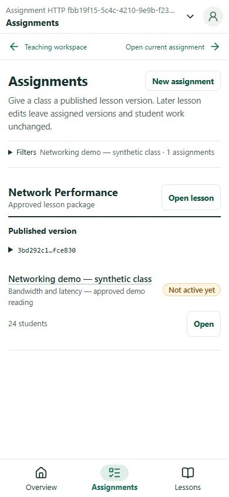
Captured ba74dc1; discovery CSS unchanged in current 9ca1018. Baseline class filter manually collapsed; assignment still inactive.
320 × 844

Historical exported v2.2 prototype; fictional built-in data.

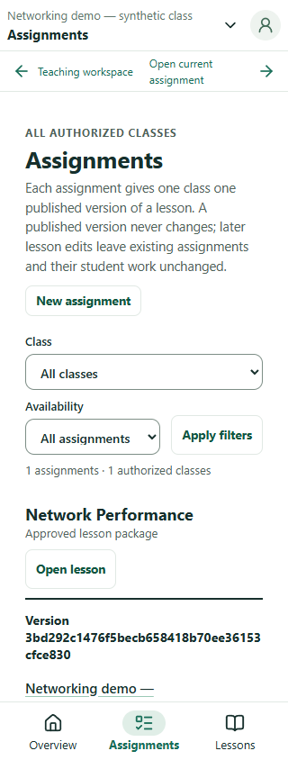
Historical combination 462cfb1; assignment input 9f300ce.

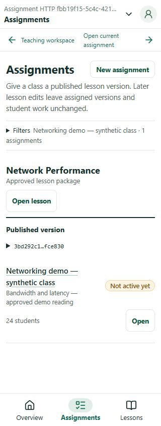
Captured ba74dc1; discovery CSS unchanged in current 9ca1018. Baseline class filter manually collapsed; assignment still inactive.
Class Progress captures at all four widths
The baseline assignment was explicitly activated before this set. It retains 63 responses from 24 enrolled synthetic students. The five summary measures show 22 students who answered, 63 answers, 61 evaluated answers, 2 pending/failed/rejected evaluations and 8 answers after help. Response counts and student counts remain distinct.

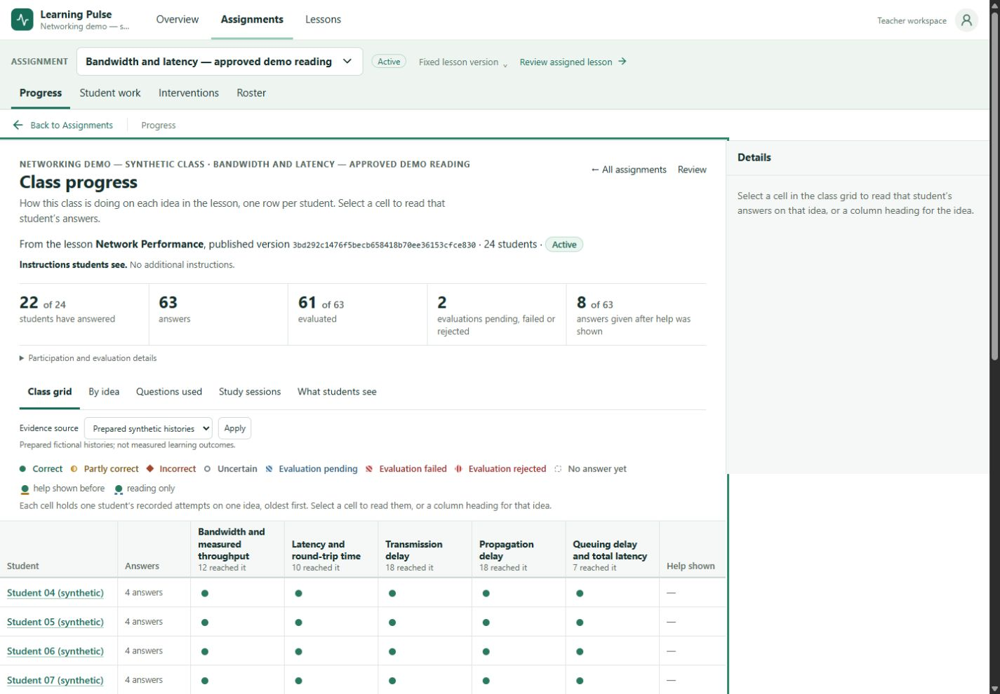
Captured on b8d0eb5. Activated baseline; 24 enrolled students and 63 retained responses.

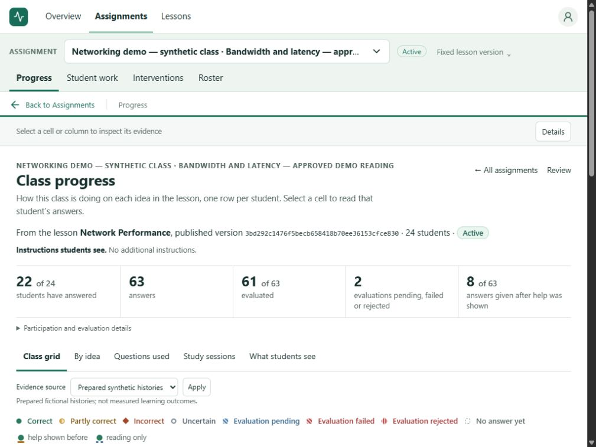
Captured on b8d0eb5. Activated baseline; 24 enrolled students and 63 retained responses.

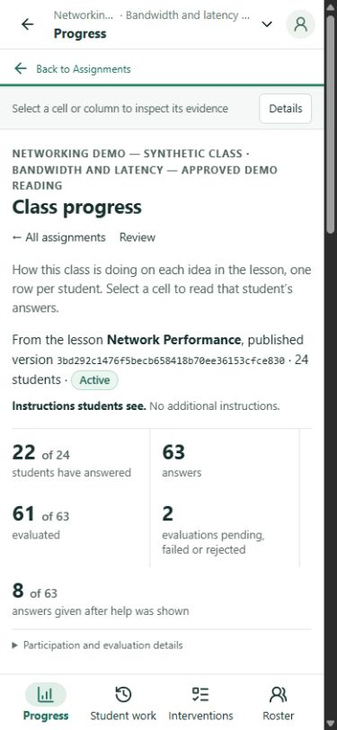
Captured on b8d0eb5. Activated baseline; 24 enrolled students and 63 retained responses.

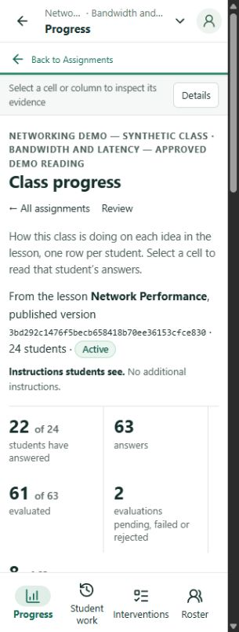
Captured on b8d0eb5. Activated baseline; 24 enrolled students and 63 retained responses.
Reference progress: prototype 1440px and prototype 320px. Prototype counts are 16 of 18 students, 68 responses, 66 evaluated, 2 pending/failed and 16 assisted; the after fixture is not relabeled to match them.


Selected evidence captures at all four widths
The selected pane displays the original answer for the chosen student and concept, and links to the existing authorized session/evidence route. On phones it replaces the grid view, making the evidence readable without scrolling past the progress summary.

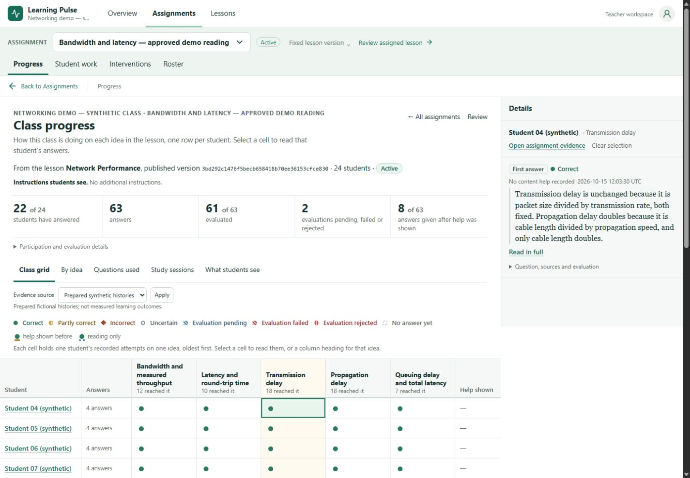
Captured on b8d0eb5. Original student response and selected concept; no duplicated evidence store.

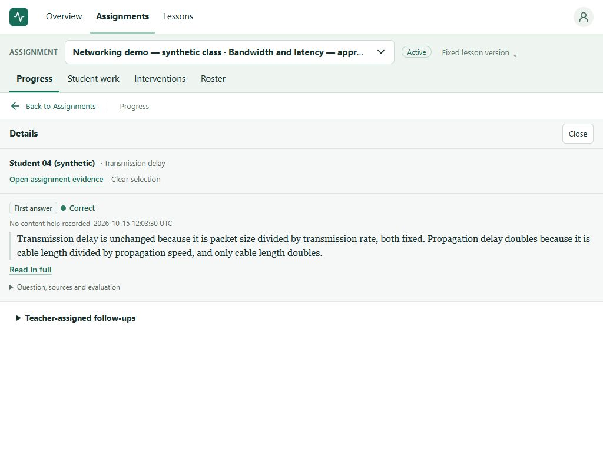
Captured on b8d0eb5. Original student response and selected concept; no duplicated evidence store.

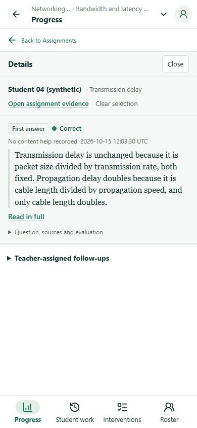
Captured on b8d0eb5. Original student response and selected concept; no duplicated evidence store.

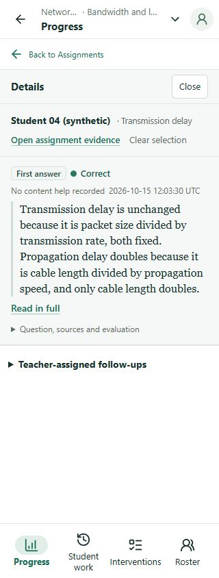
Captured on b8d0eb5. Original student response and selected concept; no duplicated evidence store.
Additional captured states
- Full immutable version disclosure · 320px and empty active-filter result · 320px.
- Exact older publication selected · 1440px and restored class/title/instructions · 1440px.
- Inactive assignment review before separate activation · 1440px and zero participation · 1440px.
- Full original response reached from Class Progress · 1440px.
- Student preview · 1440px and student preview · 320px.


Remaining visual differences and scope limits
- Mobile discovery: the explicit class-filter summary and different copy still put the first lesson 49.08px lower at 390px and 37.84px lower at 320px than the prototype. Matching gutters and no overflow do not make this a pixel match.
- Progress first viewport: both interfaces use five compact summary measures, but actual long assignment/version labels, the participation disclosure and evidence-origin controls add height. The desktop grid begins lower. At 320px the after image still shows summary metrics near the lower edge, while the prototype reaches its Class grid/By idea tabs. The summary and first-view density are not fully matched.
- Fixture differences: 24 versus 18 students, 63 versus 68 responses, real immutable hash IDs versus prototype ordinal versions, and inactive-versus-active capture timing must remain visible. Earlier default, expanded class and published-density fixtures are separate states, not interchangeable proof.
- Capture provenance: discovery and C5 recovery/review images were taken on ba74dc1; progress/details were taken on b8d0eb5. CSS remains unchanged in current 9ca1018, but those earlier images are not represented as a final-build execution.
-
Shared integration: focused HTTP checks passed
again on current
9ca1018; the C2/C5 browser receipts retain their original source identities. Broader earlier C runs passed 30 of 31 app cases and 26 restoration checks, with one 1024px Escape conflict. The assignment/shared fixes passed their exact-candidate follow-up: 8 of 8 actual-app cases and 6 of 6 component checks. This resolves that recorded conflict without erasing the earlier failure. Lessons E's separate final browser acceptance is recorded by its owner and is not counted in this assignment report. No broad accessibility or screen-reader acceptance is inferred. - Model scope: synthetic/provider-disabled checks prove these UI, routing and persistence paths. They do not prove the real agentic decision/tool/observation/adaptation cycle.
No automatic merge was performed. References: PR #117, #16, #114.
Evidence and preserved history
- Verification receipt — final source/tree/build identity, 506 standalone and 625 combined tests, static checks, production builds and both HTTP harness outcomes. Runtime used a separate fictional logical database on the existing loopback PostgreSQL 17.11 server and an owned production Next app on port 3317; no other database or server lifecycle changed.
-
Cross-workspace case ledger
— preserved earlier C application cases, the real 1024px Escape
failure and follow-up source identities. The current bounded retest
passed 8/8 actual-app and 6/6 component cases. Its raw receipt
identifiers are
run-9ca10189-final/actual-app/report.jsonandrun-9ca10189-final/switcher-six/report.json. - Browser results — recorded displayed return, hashless history, filter history, version-1 draft recovery, inactive creation and separate activation observations. The manifest's per-capture build field takes precedence over its top-level build for earlier images.
- Historical capture identities — eight retained before/prototype discovery PNGs.
- PR #122 exact intake, historical defects and historical acceptance report.
- Historical published-density report — its nineteen-question/four-inactive-assignment fixture is separate from this progress fixture.
- Earlier assignment-only fidelity report and capture identities. Existing “after” filenames there refer to that earlier correction.
Results are recorded in the verification receipt and browser manifest. Historical images retain their original identities and capture dates.